Dados pneu Sadri - Série de Taylor
Determinação dos valores dos parâmetros para o modelo de pneu sadri. Os dados são obtidos a partir da expansão da Magic Formula em série de Taylor.
Contents
Dados
Os dados apresentados aqui são obtidos a partir da expansão em série de Taylor do modelo de pneu pneuPacejka.
A expandindo em série de Taylor temos que:
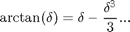
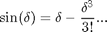
Logo, a Magic Formula:

Pode ser escrita como (Truncando a série de Taylor no termo de terceira ordem):
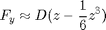
Onde:
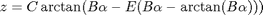
Que também pode ser expandida como:
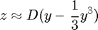
Onde:
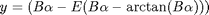
Que também pode ser expandida como:
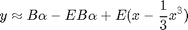
Onde:
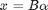
Ignorando os termos de ordem superior a três a Magic Formula expandida em série de Taylor pode ser aproximada por:
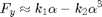
Onde:
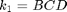
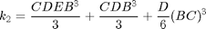
Modelo de referência
O modelo de referência usado é o modelo de pneu Pacejka que tem os seguintes dados:
pneuPacejkaDados
Código e dados
Código dos dados:
CfaF = c1F*c2F*Fz0*sin(2*atan(FzF/(c2F*Fz0))); % Cfa em função de Fz CfaR = c1R*c2R*Fz0*sin(2*atan(FzR/(c2R*Fz0))); % Cfa em função de Fz Cfa0F = c1F*c2F*Fz0*sin(2*atan(Fz0/(c2F*Fz0))); % Cfa para Fz0 Cfa0R = c1R*c2R*Fz0*sin(2*atan(Fz0/(c2R*Fz0))); % Cfa para Fz0 Dy0 = muy0*Fz0; By0F = Cfa0F/(CyF*Dy0); % Stiffness factor By0R = Cfa0R/(CyR*Dy0); % Stiffness factor % Modelo Sadri Equivalente k1F = CyF*By0F*Dy0; k2F = (Dy0*EyF*CyF*By0F^3)/3 + (Dy0*CyF*By0F^3)/3 + Dy0/6*(CyF*By0F)^3; k1R = CyR*By0R*Dy0; k2R = (Dy0*EyR*CyR*By0R^3)/3 + (Dy0*CyR*By0R^3)/3 + Dy0/6*(CyR*By0R)^3; pneuDadosFrente = [k1F k2F]; pneuDadosTras = [k1R k2R];